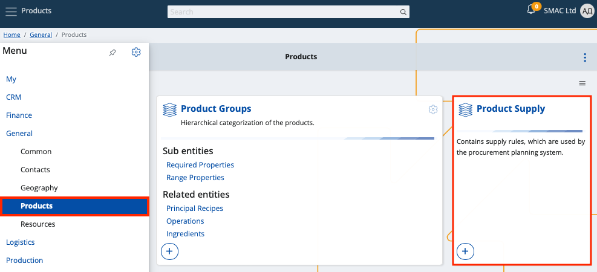
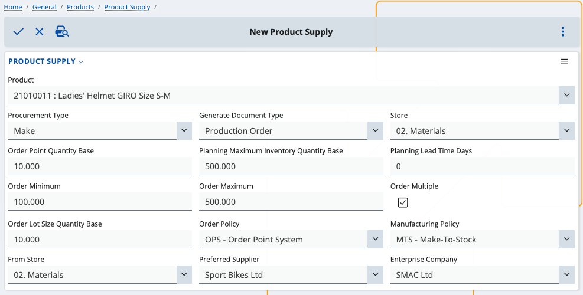
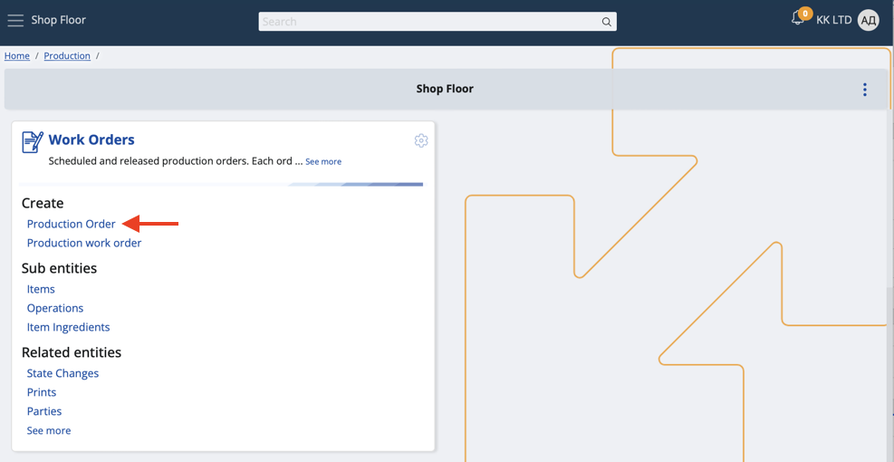

Replenishing suggestions for work orders
If your store is running low on product quantities, you can take advantage of replenishing suggestions to restore the supply to a desired number.
By following the steps below, while issuing work orders, you'll be able to generate lines exclusively for replenishing product quantities.
Prerequisites
For the feature to work as expected, you need to have done two things in advance:
- Define a product supply suited for work orders.
Go to General -> Products and select Product Supply. From there, add a new supply with the plus button.

Make sure to go through each field carefully.
Suggested replenishment requires specific values for certain fields in order to work.

- Product - The product for which the supply (and a work order) will be made.
- Procurement Type - The type of action associated with this product (in this case, produced products imply Make).
- Generate Document Type - The type of document which will be issued according to the supply rules (leave this as Production Order).
- Store - The store for which this product supply (and replenishment) will be made.
- Order Point Quantity Base - Quantity the product must drop to for replenishment to be triggered.
- Planning Maximum Inventory Quantity Base - Maximum possible quantity of product in the store.
- Planning Lead Time Days - Days needed to supply or manufacture the product.
- Order Minimum - Minimum quantity of product that can be ordered at a time.
- Order Maximum - Maximum quantity of product that can be ordered at a time.
- Order Multiple - Tick this box to make the produced product quantity multiple by lot size.
- Order Lot Size Quantity Base - The lot size value.
- Order Policy - The policy the replenishment system will follow (leave this as OPS - Order Point System).
- Manufacturing Policy - The manufcaturing product policy used by the replenishment system (must be MTS - Make-To-Stock).
- From Store - Used when the procurement type is Transfer.
- Preferred Supplier - Name of the supplier who must have produced the product (will be identical in the work order).
- Enterprise Company - Name of the enterprise company associated with the product supply (identical in the work order).
When done, save the product supply.
- Create a new work order from the Production -> Shop Floor module.

The status of the document should be below Released - most often New.
Make sure the product, output store and materials store and are identical to the ones you defined for the product supply.

Use Suggest replenish
You can apply the Suggest replenish feature from within your existing work order document.
Click the play button and select Suggest replenish.

If the order has lines, they will be removed and new ones will be automatically generated for suggested product quantity replenishing.